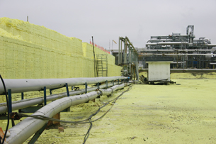

Module 5—Hydrocarbons and the Petroleum Industry
Lesson 2—Alkanes
 Get Focused
Get Focused

Hydrocarbons are a unique collection of molecules. Natural gas is a rich source of hydrocarbon molecules. Refineries, like the ones pictured on page 363 of the textbook and in the photo here, separate components of natural gas. In Alberta there are over 750 plants that produce and refine natural gas.
Hydrogen sulfide is a component of some natural gas resources. Hydrogen sulfide, water, and carbon dioxide are common products of natural gas refining. The final product of hydrogen sulfide removal is elemental sulfur. Judging by the size of the sulfur block pictured here, a large quantity of natural gas and hydrocarbons were refined at this facility.
In Lesson 2 you will continue to learn about hydrocarbons, and you will learn how to distinguish and communicate the differences in the chemical structure of hydrocarbon molecules.
Consider the following questions as you complete Lesson 2:
- What are alkanes?
- What industries use alkanes?
- What steps are used to refine natural gas?
 Module 5: Lesson 2 Assignment
Module 5: Lesson 2 Assignment
In this lesson you will complete a case study on the extraction of coalbed methane. Download a copy of the Module 5: Lesson 2 Assignment to your computer now. You will receive further instructions on how to complete this assignment later in the lesson.
You must decide what to do with the questions that are not marked by the teacher.
Remember that these questions provide you with the practice and feedback that you need to successfully complete this course. You should respond to all the questions and place those answers in your course folder.